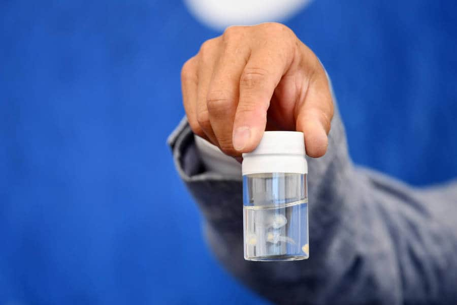
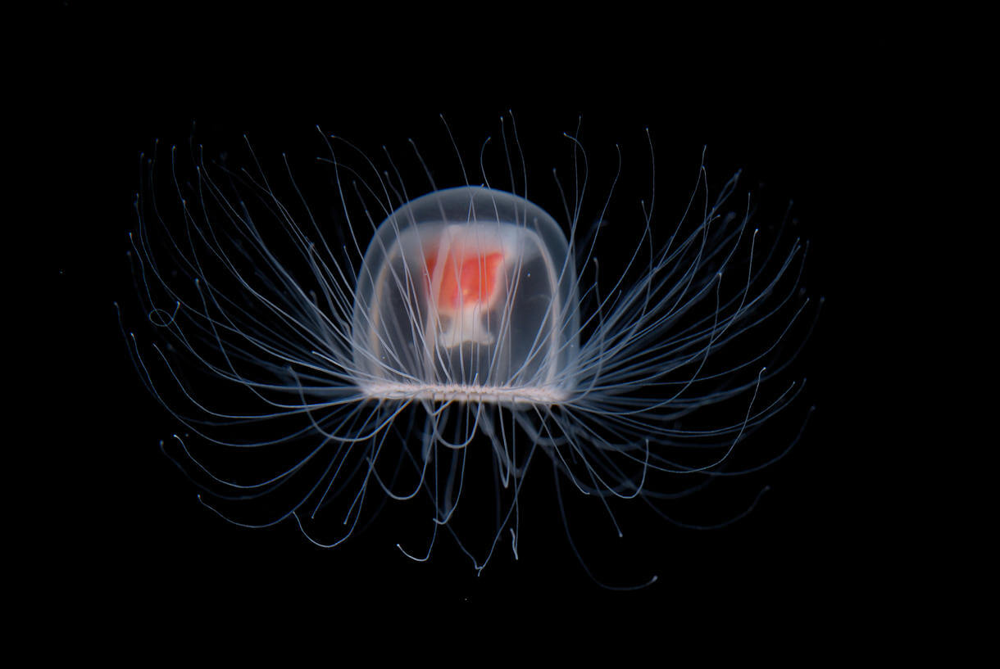

The Immortal Jellyfish
Fun Facts
- Is about the size of your pinky
- Has no brains or a heart
- Are hitchhikers, hitching rides on cargo ships
- Has between 8 and 90 tentacles
- Reproduces both sexually and asexually
- Big ships created big currents spreading them globally
- Has a basic network of neurons to sense their environment
- They do sting, but they are not poisonous
History
Discovered in 1883, its immortal ability wasn't discovered until the mid-1990s. Students Giorgio Bavestrello and Christian Sommer gathered Turritopsis polyps and stored them until medusae were released. They continued to observe the jellyfish and found that under stress, the medusae would drop to the bottom of the jar and develop into polyps without fertilization or the traditional larval stage.
Birth & Reproduction
The immortal jellyfish begins its life cycle as a planula, a larva that can move and settle on the surface while swimming. After settling, the planula will grow into a single polyp and then reproduce asexually to form a colony. Once the colony is large enough, it will produce and release a large number of identical newborn jellyfish (also known as the medusa). The release of eggs or sperm into the water column by newborn jellyfish as they mature allows for the development of extra planula and external fertilization.
Medusae in jar
 Immortal Jellyfish